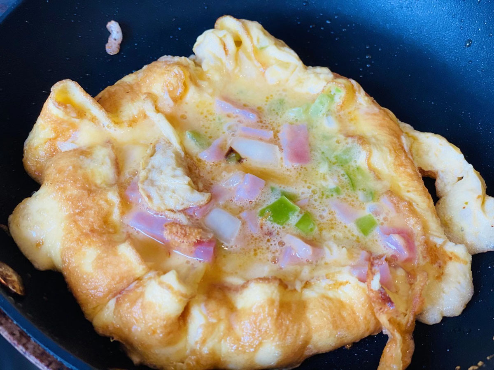

Recipe 1 - Breakfast Omelet
Ingredients
- - 2 eggs
- - 1 ham
- - half green bell pepper
- - 1/4 onion
- - 1/2 cup of heavy cream
Cooking Instruction
- - dice up the ham, bell pepper, and onion
- - beat the eggs with 1/2 cup of heavy cream
- - heat up the non-stick pan with 1tbsp of cooking oil on medium fire
- - cook the ham, onion, and bell pepper to 60%
- - empty the pan, add 1 tbsp of oil
- - put in the egg and add the rest of ingredients
- - cook and serve
Enjoy!